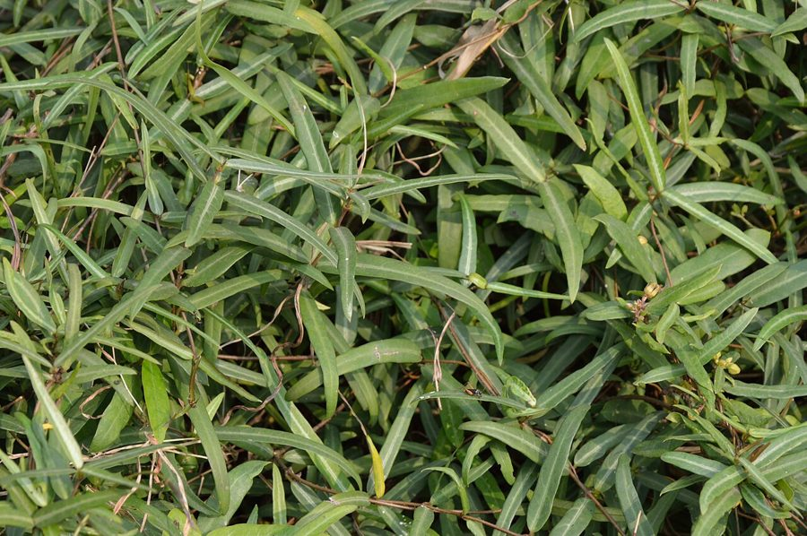

इंडियन सरसापरिलाIndian Sarsaparilla
Hemidesmus indicus · Apocynaceae · FLR-0412

- Scientific name वैज्ञानिक नाम
- Hemidesmus indicus (L.) R.Br.
- Family कुल
- Apocynaceae
- Hindi हिंदी
- इंडियन सरसापरिला
- Local names स्थानीय नाम
- indian sarsaparilla, anantamul
- Status here यहाँ की स्थिति
- native
- Movement आवागमन
- Resident, here all year
- Known from कहाँ दर्ज
- Others have published records from the wider Awadh–Purvanchal plain, none yet from Basti–Ayodhya अवध–पूर्वांचल से दूसरों के प्रकाशित अभिलेख, बस्ती–अयोध्या से अभी नहीं
- IUCN IUCN
- not evaluated
- Review समीक्षा
- not yet reviewed
When to look कब देखें
Present all year. साल भर मौजूद।
Uses and possibilities उपयोग और संभावनाएँ
“Traditional medicine” means a documented traditional use, not a claim that it works. Nothing on this page is medical advice.
Drawn from the documented uses in the profile below, where each is labelled traditional, current or a research lead. All uses →
इंडियन सरसापरिला / Indian Sarsaparilla
Hemidesmus indicus (L.) R.Br. — Apocynaceae
इंडियन सरसापरिला — जिसे आयुर्वेद में अनंतमूल या सुगंधी के नाम से जाना जाता है, यह झाड़ियों और बाड़ों पर चढ़ने वाली एक पतली बारहमासी बेल है। इसकी जड़ों में वैनिला जैसी मीठी और सुखद खुशबू होती है। इसके तनों को तोड़ने पर हल्का दूधिया रस निकलता है और पत्तियों के बीच में सफेद धारियां पाई जाती हैं। इसके छोटे फूल बाहर से हरे और अंदर से गहरे बैंगनी होते हैं।
Quick Identification त्वरित पहचान
| Feature | Description |
|---|---|
| Plant habit | Slender, twining or prostrate perennial wiry undershrub with milky sap |
| Roots | Long, cylindrical, aromatic rootstock smelling sweet like vanilla |
| Stems | Wiry, purplish-brown, thickened at the nodes, nearly glabrous |
| Leaves | Opposite, extremely variable; elliptic to linear-lanceolate, often with white median band |
| Flowers | Small, crowded in subsessile axillary cymes; greenish outside, dark purple within |
| Fruit | Slender, cylindrical, paired follicles (divergent) tapering to a point |
Field tip: Look for a thin wiry twiner with variable opposite leaves often marked with a white central stripe, and strongly sweet-scented aromatic roots.
हिंदी: पतले तारों जैसे तने, पत्तियों के बीच सफेद धारी और मीठी खुशबूदार जड़ों से इसे पहचाना जाता है।
Morphology आकारिकी
Measurement not available in consulted sources.
A slender, laticiferous, twining or prostrate perennial undershrub. Rootstock woody, aromatic, long, cylindrical, tortuous, with a dark brown longitudinally furrowed corky bark and sweet, vanilla-scented yellowish-white inner bark. Stems numerous, wiry, slender, terete, dark purple or reddish-brown, swollen at nodes, glabrous or puberulous, exuding a white milky latex when damaged.
Leaves opposite, extremely variable in shape even on the same plant, from broadly elliptic or oblong to linear-lanceolate, acute or apiculate at the apex, rounded or cuneate at the base, margins entire, coriaceous, dark green and shining above, often variegated with a broad white median stripe along the midrib, pale and reticulate beneath; petiole short.
Inflorescence consisting of small, dense, crowded, subsessile cymes in the leaf axils, surrounded by numerous small ovate bracts. Calyx deeply five-lobed, segments ovate-acute with scarious ciliate margins. Corolla rotate, deeply five-cleft; lobes thick, valvate, greenish-yellow outside, dark reddish-purple or chocolate-brown within. Stamens five, inserted near the base of the corolla tube; filaments distinct, anthers adhering to the stigma.
Fruit consisting of two long, slender, cylindrical, straight or slightly curved follicles, widely divergent from the base, smooth, tapering to a point. Seeds numerous, flat, ovate-oblong, topped with a long tuft of silky white hairs (coma).
हिंदी: जड़ें खुशबूदार होती हैं। तने पतले और बैंगनी-भूरे होते हैं। पत्तियाँ कभी चौड़ी तो कभी लंबी होती हैं और बीच में सफेद लकीर होती है। फूल बाहर से हरे और अंदर से बैंगनी होते हैं।
Behaviour & Ecology व्यवहार और पारिस्थितिकी
A widespread native Indian twiner of open deciduous thorn scrub, dry alluvial bluffs, and uncultivated hedge thickets. It scrambles over low bushes, fences, and grassy banks, thriving in well-drained loamy or sandy soils with moderate exposure to sunlight.
The sweet fragrance of the root is due to 2-hydroxy-4-methoxybenzaldehyde, which acts as a chemical defense against subterranean root herbivores and pathogenic soil fungi. The flowers produce a sticky translator mechanism characteristic of the milkweed family, ensuring precise attachment of pollinia to visiting insects. When the paired follicles split in early summer, the tufted silky seeds are carried aloft by convective air currents.
हिंदी: यह बेल झाड़ियों पर लिपटकर ऊपर चढ़ती है। जड़ों की विशेष खुशबू इसे जमीन के कीड़ों से बचाती है। हवा में उड़ने वाले बीजों से यह फैलती है।
Life Cycle / Phenology जीवन चक्र
Vegetative shoots lengthen actively during the monsoon rains from July to September. Fresh leaves and climbing tendril-like branches scramble vigorously over supporting vegetation.
Flowering extends from August through December, peaking in the post-monsoon period. Paired horn-like follicles develop slowly during the winter months and mature from February to April. On dry windy afternoons in April and May, the follicles dehisce along the ventral suture, setting free silky plumed seeds. Plants survive the intense summer drought through their deep, moisture-storing perennial roots.
हिंदी: बारिश में बेल तेजी से बढ़ती है। अगस्त से दिसंबर तक फूल आते हैं। सर्दियों में फलियां बनती हैं और गर्मियों में फटकर बीज उड़ाती हैं।
Associated Species / Interactions सहजीवी प्रजातियाँ
The small dark purple blossoms are visited by tiny beetles, wasps, and hoverflies that transfer the pollinia.
In natural scrub, it twines among shrubs such as adusa (Justicia adhatoda), karaunda, and jharberi.
हिंदी: इसके फूलों पर छोटी मक्खियाँ और ततैया आते हैं।
Pests and Diseases कीट और रोग
Oleander aphids occasionally colonize tender shoot tips and flower clusters during humid autumn weather. Wild plants are otherwise remarkably resistant to insect pests due to their laticiferous sap.
हिंदी: कोमल डालियों पर कभी-कभी पीले माहू लग जाते हैं, पर दूधिया रस के कारण अन्य कीड़े कम नुकसान पहुँचाते हैं।
Agricultural / Human Relevance कृषि प्रासंगिकता
Chopra et al. (1956, p. 131) record that the aromatic roots of Hemidesmus indicus (vern. Anantamul) are used as a substitute for sarsaparilla, acting as a demulcent, diaphoretic, and tonic in loss of appetite, fever, and skin diseases. This is a record of published traditional use, not medical advice.
हिंदी: चोपड़ा और साथियों (1956) के अनुसार इसकी सुगंधित जड़ें सारसापरिला के बदले, और भूख न लगने, बुखार तथा त्वचा रोगों में दी जाती हैं।
Expected Locally स्थानीय रूप से अपेक्षित
Not a field record. Written from published accounts for eastern Uttar Pradesh. No confirmed local sighting yet — if you have seen it, that is what the atlas needs.
अभी तक स्थानीय पुष्टि नहीं। यह विवरण प्रकाशित स्रोतों से है, किसी अवलोकन से नहीं।
Expected in scrubby railway verges, canal embankments, field hedges, and older village grove margins across Basti, Ayodhya, and neighbouring districts. GBIF holds published records from the wider Awadh–Purvanchal plain, none yet from Basti–Ayodhya. The first verifiable record from the region will be a dated photograph of flowering plants or a population in a weed habitat or field border with district and coordinates.
हिंदी: बस्ती और अयोध्या में झाड़ियों की बाड़, नहरों के किनारों और पुराने बागों में इसकी बेल मिल सकती है।
Distribution वितरण
Global range: Native to South Asia, primarily throughout India, Sri Lanka, and Bangladesh.
In India: Widespread across the plains and lower hill ranges, from the Gangetic plain through Central India to the Deccan and southern peninsula.
In Uttar Pradesh: Distributed across the dry deciduous belts, scrub wastelands, and grove borders throughout the state.
In Basti district / eastern UP: Expected on well-drained sandy-loam ridges, hedge lines, and scrub borders.
हिंदी: यह पौधा मुख्य रूप से भारत और श्रीलंका का मूल निवासी है और देश के अधिकांश मैदानी और जंगली भागों में मिलता है।
Research Questions शोध प्रश्न
- Which micro-hymenopteran and dipteran visitors are the most effective vectors of pollinia transfer in this species?
- What environmental cues trigger the synthesis of the aromatic compound 2-hydroxy-4-methoxybenzaldehyde in the rootstock?
- How severely has wild root collection impacted local populations in eastern Uttar Pradesh hedge habitats? / पूर्वी उत्तर प्रदेश में जड़ों की खुदाई से इसकी स्थानीय आबादी पर कितना असर पड़ा है?
- What is the seed germination percentage under varying soil moisture regimes following dry-season seed release? / गर्मियों में बीज बिखरने के बाद विभिन्न नमी स्तरों में इसके अंकुरण की दर क्या है?
- Can a school child distinguish the sweet vanilla-like aroma of a crushed root from other common hedgerow climbers?
हिंदी: क्या इसकी जड़ों की वैनिला जैसी खुशबू इसे अन्य लताओं से अलग पहचान दिलाती है और क्या इसके बीजों में रोयें होते हैं?
Similar Species मिलती-जुलती प्रजातियाँ
| Species | How to tell apart | हिंदी |
|---|---|---|
| None | Wiry twining climber with white-variegated opposite leaves, milky sap, and vanilla-scented roots; no close look-alike in the local flora | पत्तियों पर सफेद लकीर, दूधिया रस और सुगंधित जड़ों के कारण इसका कोई करीबी मिलता-जुलता पौधा नहीं है |
Field rule: Look for the wiry purplish climber with white-striped opposite leaves, milky sap, and intensely sweet vanilla-scented roots.
हिंदी: पत्तियों के बीच सफेद लकीर, दूधिया रस और जड़ों की वैनिला जैसी मीठी खुशबू देखकर इसे पहचानें।
Taxonomy & Classification वर्गीकरण
Original description. First described as Periploca indica by Carl Linnaeus in 1753 in Species Plantarum, volume 1, page 211. Transferred to Hemidesmus by Robert Brown in 1811 in Memoirs of the Wernerian Natural History Society, volume 1, page 56.
Subspecies. Monotypic in northern India; populations across the Gangetic plain show considerable foliar polymorphism but belong to the typical taxon.
Family and order placement. Placed in family Apocynaceae (subfamily Periplocoideae), order Gentianales. Formerly treated in Asclepiadaceae before being subsumed into Apocynaceae.
Phylogenetic notes. Characterized by granular pollen aggregated into translators rather than true waxy pollinia.
IUCN status rationale. Not evaluated by the IUCN Red List. It remains widespread across South Asia, though subject to heavy local foraging pressure for herbal use.
हिंदी: यह अपोसाइनेसी परिवार का सदस्य है। लिनियस के 1753 के नाम को रॉबर्ट ब्राउन ने 1811 में हेमीडेस्मस जीनस में रखा था।
Photo Gallery फोटो गैलरी
No photos yet — add field photos to media/species/indian_sarsaparilla/ and run node scripts/sync_photos.js.
Photos needed आवश्यक फोटो
- [ ] Wiry twining stems with white-variegated leaves (सफेद धारीदार पत्तियों वाली बेल)
- [ ] Subsessile axillary cyme of purple-throated flowers (बैंगनी रंग के छोटे फूल)
- [ ] Paired cylindrical divergent follicles (दो सींगों जैसी फलियां)
References संदर्भ
- Linnaeus, C. (1753). Species Plantarum, vol. 1, p. 211.
- Brown, R. (1811). Memoirs of the Wernerian Natural History Society, vol. 1, p. 56.
- Duthie, J. F. (1911). Flora of the Upper Gangetic Plain and of the Adjacent Siwalik and Sub-Himalayan Tracts, vol. 2, p. 45.
- Hooker, J. D. (1883). The Flora of British India, vol. 4, p. 5.
- Chopra, R. N., Nayar, S. L. & Chopra, I. C. (1956). Glossary of Indian Medicinal Plants, Council of Scientific and Industrial Research, New Delhi, p. 132.
- GBIF Occurrence Data — Hemidesmus indicus, India (2025).
Source file: species/flora/medicinal/indian_sarsaparilla.md